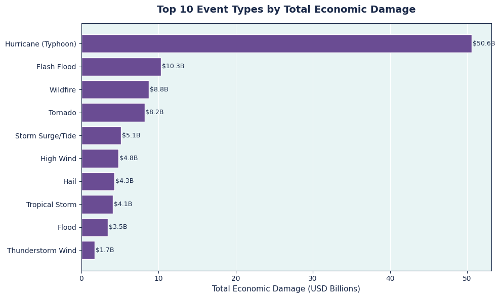
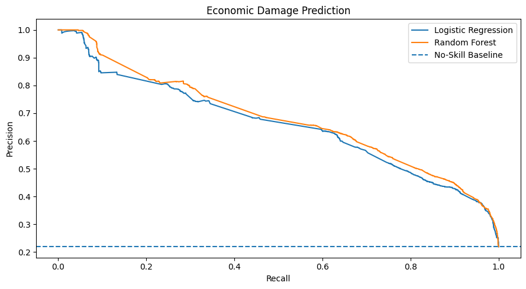
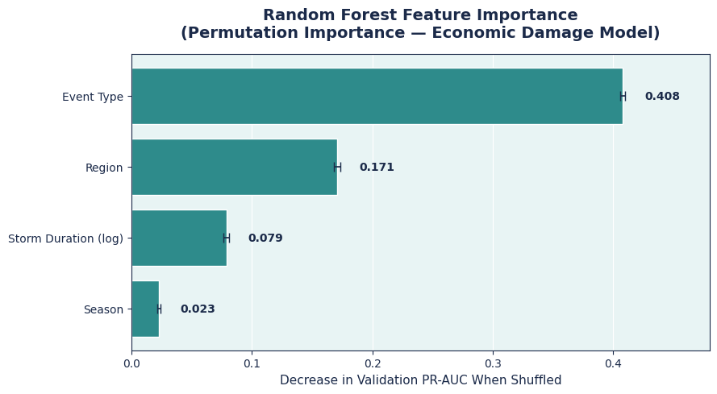

EXHIBIT 01 · EXPLORATORY ANALYSIS
Which storm types appear most often?
Event counts and damage-report counts provide different views of storm frequency.

BELLEVUE UNIVERSITY · DSC 450 · PROJECT 01
In this team project, I worked as the data scientist to investigate whether information already recorded about severe weather could help predict reported economic damage. I applied classification modeling and evaluation to examine useful storm characteristics while considering what documented damage can and cannot tell us.
Start with the question01 / THE RESEARCH QUESTION
We predicted whether a storm record included reported economic damage, not its dollar amount or all harm caused. This defined our classification target.
02 / WHAT THE ANALYSIS REVEALED
I compared storm frequency with documented damage to distinguish how often events occur from the losses they report.
EXHIBIT 01 · EXPLORATORY ANALYSIS
Event counts and damage-report counts provide different views of storm frequency.
EXHIBIT 02 · DATA INTERPRETATION
Less frequent storm types can represent substantial damage totals. Frequency is not impact.

03 / EVALUATING THE PREDICTION
ROC-AUC measures ranking across decision thresholds. Average Precision summarizes precision–recall performance when the reported-damage class is relatively uncommon.
EXHIBIT 03 · MODEL EVALUATION
The precision–recall curves show threshold tradeoffs that a single accuracy score might obscure.

REPORTED TEAM EVALUATION
Our team reported both measures for the Random Forest model.
Related NOAA event records can belong to the same storm episode. Grouping episodes during evaluation reduces the chance of closely related records appearing in both training and testing, which could overstate generalization.
These reported scores are retained from the existing portfolio. The underlying evaluation notebook and report are not included in this repository, so independent reproduction is still pending.
04 / INTERPRETING THE MODEL
Event type was the strongest predictive signal. That describes model behavior, not the cause of damage.
EXHIBIT 04 · MODEL INTERPRETABILITY
Event type, region, duration, and season contributed differently to the model's predictions.

05 / THE APPROACH AND MY CONTRIBUTION
As the data scientist, I worked on classification modeling and evaluation. Our team grouped storm episodes and interpreted findings with the limitations of reported damage in mind.
Team roles: Matthew Scarpello, Data Scientist; Andrea Barfield, Data Wrangler; Hali Sarah Parsons, Data Visualizer and Presenter. This page identifies team-wide methods separately from my individual modeling role.
Methods documented on the portfolio: NOAA Storm Events records for 2020–2025; event type, region, season, and duration as predictors; grouped storm-episode evaluation; Random Forest results and precision–recall analysis. The portfolio also lists logistic regression among project skills, but its exact implementation is not described here without the modeling notebook.
Limits: Missing or inconsistent damage reports affect the target. Results describe associations in documented records, not causation, specific-property risk, or the full scope of actual damage. They should not be used alone to allocate or withhold emergency assistance.
06 / GO FURTHER
Explore the original figures and NOAA source data. The team's notebook and report are not yet linked here.